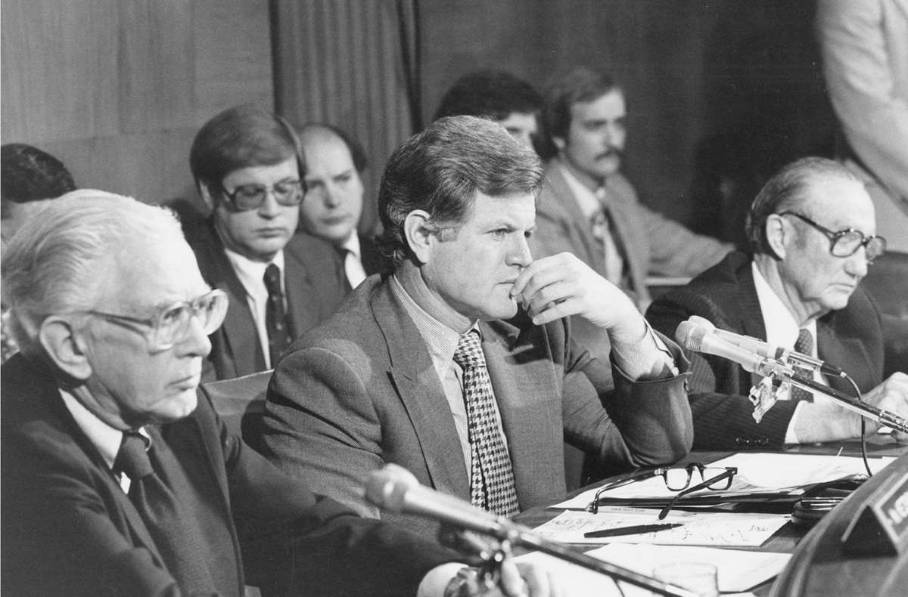
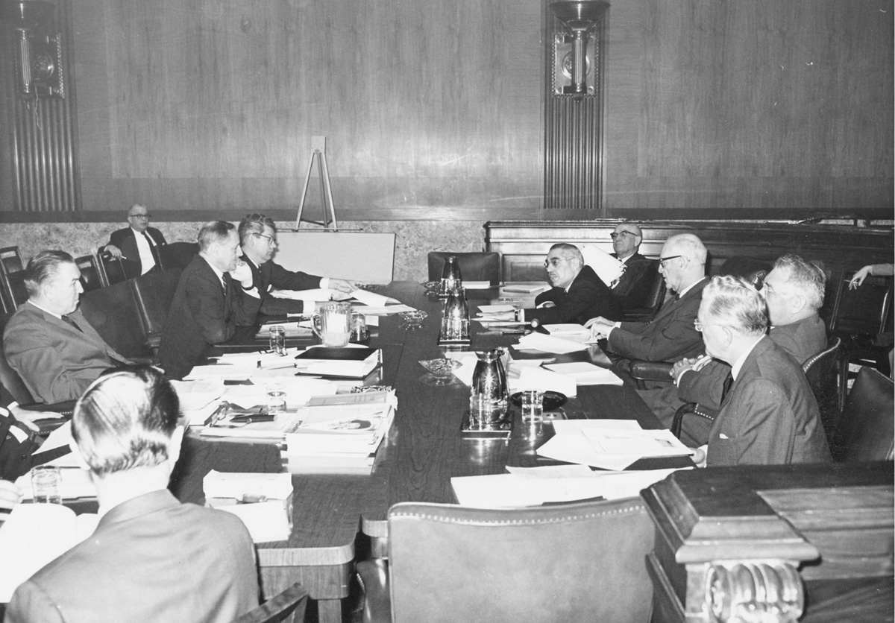

一旦赢得选举进入众议院或参议院，新任议员会即刻争取委员会任命。委员会将塑造他们的立法履历，会帮助他们创造纪录、吸引媒体关注并筹集竞选资金。1987年，南希·佩洛西刚刚进入众议院便去争取拨款委员会的职位，并一直为此敦促民主党领导层。直至连选连任成功，她都没有获得这个令人垂涎的职位。议员们有时获得的任命会与期望相去甚远。李·汉密尔顿（印第安纳州民主党人）曾要求进入众议院公共工程委员会，但最终失望地进入外交委员会。这之后不久，汉密尔顿对外交政策产生浓厚兴趣，以致回绝强势的筹款委员会职位，而继续主持外交事务。
伍德罗·威尔逊于1885年写成博士论文《国会政体》（Congressional Government ），他令人难忘地将处于会期之中的国会描述为公开展览的国会，而召开委员会会议的国会则是工作中的国会。法律法规更多地在委员会而不是两院议会大厅的议场上制定出来。因此，相比于委员会之外的席位，委员会当中的席位使议员更有机会影响有关某项事务的立法工作。议员们将大量注意力投注到委员会工作当中，或盘问证人，或审核（修订）议案。
服务于多个委员会和小组委员会的参、众两院议员，但逢会议同时举行，便不得不在其中做出选择或往来穿梭（也更依赖委员会工作人员）。逢立法日，议员们便会同时关注委员会和议场活动。当铃声召唤他们前往议会大厅投票时，他们或许正在听取有关某项紧急国家事务的听证会，进而要迫使重要证人在此期间空等。不论日程如何混乱繁忙，委员会始终是立法程序的核心。
新一届国会召开之际，政党指导委员会将新任议员任命到委员会，一些资深议员则转到更有吸引力的委员会以填补空缺。每个政党可以获得的委员会席位数与其在整个议会大厅中的政党席位所占比例大致相当。政党大会也会限制议员可以为之效力的委员会数量。委员会接受来自不同层面的运作资金用以雇用工作人员，这些资源由多数党把控，但会与少数党分享其中的一部分。
参、众两院的规则界定了每个委员会的管辖范围，在它们之间分配政府主要事务。委员会又再细分为小组委员会以进一步实现专业化，并由它们承担绝大多数工作。小组委员会对已经提交的众多法案进行拣选，排除大多数，而只关注一小部分。工作人员会为听证会收集资料，听证会将邀请专家证人，会吸引媒体关注，并构建一个案例以使立法获得通过。小组委员会随后向全体委员会做汇报，全体委员会也将召开听证会。一些“声名显赫的委员会”其听证会不时制造新闻，其他一些则更趋向于以政策为导向，不那么吸引公众的注意力——其成员始终安于制定法律而非制造新闻头条。资深议员劝告年轻议员埋头苦干而不是张扬其事，但雄心勃勃的新议员前来国会的愿景依然是效力于引人瞩目的委员会，希望进入具有“明星般魅力和政治筹谋”的那一个。
立法始于提出法案（bill，源于中世纪的“bulla”一词，即带有封印的文书）。众议员要将法案投入法案投置箱（hopper）——议长演讲台上的红木箱，参议员会将法案交予议会大厅演讲台上的书记员。书记员给法案编上号码，法规专家则根据规则的要求将法案提交给适当的委员会。在参议院，法案将提交给唯一一个委员会；在众议院，法案全文或其中的某些部分会提交给多个委员会。
作为供职十年的参议员，哈里·杜鲁门曾总结道，立法者最大的成就是阻止糟糕的想法获得通过，而大多数法案的确被扼杀在委员会中。第110届国会期间（2007—2009）提交的法案达到1.4万项，只有3.3%获得通过成为法律。某些议员在一届国会中提交上百项法案，却并不奢望它们获得通过。相反，他们将这些法案视为一种手段，用以了解思想观念，促进个人利益和理想抱负，帮助某位选民或捐助人，又或增进对本州意义重大的经济利益。
为了从每年提交的大量法案中区别出重要的一些，议员们会留下象征性数字，如S1或HR1776。他们也会用适合作为新闻标题的缩写字母精心设计名称，如《美国爱国者法》（USA PATRIOT Act）表示“为拦截或阻挡恐怖主义提供其所需恰当手段以团结并巩固美利坚”（Uniting and Strengthening America by Providing Appropriate Tools Required to Intercept and Obstruct Terrorism）。国会生涯的标志性成就是以名称为人熟知的法案，这些法案通常以参、众两院主要提案人共同命名，如《塔夫脱–哈特莱法》和《萨班斯–奥克斯利法》。为增加法案获得重视的机会，法案的拥护者会向“亲爱的同事”发出信件以寻求共同提案人。立法越具有说服力，越会吸引更多的共同提案人，进而越有可能获得通过。有关建立越战老兵纪念碑的法案由全部一百名参议员作为共同提案人，进而确保其获得通过。
常设委员会和小组委员会主席将送交他们的大量法案进行分类整理，随后决定予以处理的法案以及处理顺序。主席任职曾经严格依资历而定。一旦议员进入某个委员会，无论偏离政党核心位置多远，其升迁都以服务年限为准。这总体上排除了选任主席过程中的潜在冲突。在20世纪大部分时间里，主席们作为当家之主管理委员会，其风格从专断到民主不一而足。他们曾负责决定委员会何时开会、是否设立小组委员会、处理哪些事务以及由谁担任工作人员。至1970年代，参、众两院通过改革削弱了委员会主席的个人权力，同时奖励党派忠诚甚于资历，也使委员会中的其他成员有可能推动议程中的某项事务并对选用工作人员拥有更多的发言权。
委员会主席依然具有影响力，特别是由于“主席的评价”或法案的起草通常构成委员会展开审议的起点。尽管权力已遭削弱，议员欧内斯特·霍林斯（南卡罗来纳州民主党人）还是警告避免失去委员会主席的垂青：“如果某位参议员已经提出一项法案并希望看到它取得进展，可以相当确信的是，如果他确实在其他某项事务上追击主席，便不会在他个人的法案上达成所愿。”少数党在委员会中的副主席的角色更不确定。参议员鲍勃·克里（内布拉斯加州民主党人）解释道：主席“驱车掌舵，副主席在风和日丽时坐到前排。乌云密布时，则同主席的工作人员拼车”。
两党过去都习惯于将新任参议员委任到相对次要的委员会，使他们在其中得到锻炼，再将他们提升到主要委员会。林登·约翰逊任参议院民主党领袖时开启新的做法，其政党大会的每一位新议员从一开始就被派往至少一个有声望的委员会。多数新议员如今都在主持小组委员会，或作为资深少数党议员效力于小组委员会。此举使新人有机会在立法中发出个人的声音，在某项事务上摆明立场，或为其事业建立平台（更不用说使他们对提供任命的领袖心存感激）。领袖们给出的理由是，新议员会有更多时间投入小组委员会，他们也会乐于接受这项责任。广泛的主席任职也进一步彰显着政党的明日之星。但是，对于不时试图削减数量不断激增的竞争性委员会和小组委员会来说，这些做法却在使其受挫。
随着国会工作量的增加，从一届国会延续到下一届的常设委员会数量也在增加。1946年《立法机构重组法》对委员会数量予以削减，对管辖范围加以整合，并试图通过发展联合委员会减少分别在参、众两院委员会提供相同证词的过剩的政府官员。两院对协同工作的天然抵触使它们无法在一些内部政务上组成联合委员会，如政府印务和国会图书馆监督等。这部重组法也为国会委员会安排了首批专业人员。在那之前，文职工作的处理曾交予若干办事人员，这种保荐职位通常指定给主席的家庭成员。例如第二次世界大战期间，参议院对外关系委员会的全部工作人员由一位秘书、一位办事员以及一位兼职助理组成。当美国经由战争崛起时，国会意识到政府的发展壮大和千头万绪需要更为专业化的办事人员予以协助（至20世纪末，委员会工作人员已超过50人）。
最初一批委员会专业工作人员不具有党派性，他们被同等地委以多数党或少数党的工作，议会大厅主导权在两党间更替时也不会发生变化。同一批工作人员可能为某一个政党的法案撰写委员会报告，又为另一个政党的声明撰写委员会报告。这一制度在1970年代宣告瓦解，而此前便有少数党议员抱怨工作人员倾向于反映主席而不是他们的利益。委员会被授权雇用少数党工作人员，这也就默许专业工作人员转变为多数党工作人员。委员会工作人员承担起大量准备工作，他们起草法案、开展谈判、为议员在听证会上发问准备问题并向他们简要汇报立法进展。
委员会邀请专家证人作证，也可以传唤不情不愿的证人，并以藐视国会的指控惩罚那些不予配合的证人，这种指控有可能伴随着罚款或监禁。一些官员因没有提供委员会所要求的信息而面临弹劾威胁。然而，多数机构负责人乐于作证，因为他们很可能为了自身的计划向同一个委员会寻求支持。在审问证人的过程中，最先发问的是资深议员，年轻议员耐心地等着轮到自己发问。委员会成员和工作人员明白，他们对于证人的选择可能会决定辩论形式及其催生的法律。一位委员会书记员评论道：“（如果）找到恰当的证人，提出合适的问题，而他们妥善作答，那么对手还没张开罗网便已束手就擒。”
法案从小组委员会提交到全体委员会，委员会成员召开审议会议逐个部分地予以审核和修订。审议期间会达成妥协，新条款会加入其中，某些条目会荡然无存。委员会随后向参议院或众议院全体议员汇报已经审议的法案，同时附上一份对法案条款做出解释的报告。听证会和报告将予以出版从而形成一项记录，国会将最大一部分活动的内容予以印刷出版，其中很多内容如今已放置到互联网上。
多数法案获得通过时，在形式上与委员会提交这些法案时相差无几，这说明委员会成员对于立法内容拥有最大的发言权。两党成员之所以被吸引到特定的委员会，原因在于他们在经手处理的事务上存在个人利益，或者这些事务影响到其所在各州。因此相比于议场，委员会中的商议少有党派色彩。参议院议场中提出的修正案也许试图改善或破坏法案，但法案离开委员会之际有待补充的空间通常已所剩无几。经“常规程序”形成的委员会法案的优势在于它经过严格审核，这样的审核已经通过协商达成某些共识。一位参议员回想起曾有法案在委员会经过六天“艰苦费力”的审议，形成59项对法案进行强化的修正案。
政党领袖有时会任命特别工作小组起草法案，以此绕过常设委员会。这一程序使投身某项事务的议员们得以越过委员会的重重障碍，当议会大厅中规模庞大的多数党与委员会多数成员想法不一时尤其如此。在参议院，与避开常规程序相伴的问题是，常设委员会可能在审核会议中形成一些会引起争议的修正案，以此对法案形成猛烈攻击。特别工作小组的反对者们将这种领导方式解释为：“我们拿着这项想要塞进你们喉咙里的法律。”
在国会中，委员会制度根深蒂固。1789年，参、众两院任命临时委员会处理专项事务，随后予以解散。众议院作为较大的机构并因此需要更完善的组织，于第一届国会期间设立了首个常设委员会。随后25年中，又增加了25个。规模较小的参议院曾仰赖临时委员会，直至狼狈不堪的1812年战争致使国会大厦成为废墟，参议员们才认识到增强稳定性、持续性和专业化的必要性。
两院规则对委员会的管辖范畴都做出了安排，但这对某些事务并不完全适合，由此存在重叠。由于众议院可以将同一项法案的某些部分送交多个委员会，两个或多个委员会或许会审查同一个机构但提出矛盾的指示。众议院各委员会会相互争夺控制权，需经一番讨价还价才能达成和解。如2001年，能源委员会、贸易委员会和司法委员会都曾宣称有权处理有关解除宽带网络市场管制的立法工作，这场冲突导致立法陷入停滞。议长不得不令委员会主席相互协商直至达成妥协。
宪法规定，所有征税法案须在众议院中产生（宪法第一条第七款），依众议院的解释，此项规定囊括筹集和支出联邦资金的全部法案。1795年，筹款委员会成立，负责管理税收和支出事务，至1865年创建独立的拨款委员会，这些职能才得到划分。众议院将筹款委员会作为“封闭型委员会”，这意味着其成员不得在其他委员会任职（规则委员会和拨款委员会同样要求专属任职）。除了税收和关税，筹款委员会还负责管理社会保障和医疗保险。鉴于责任重大，两党普遍避免向该委员会任命“触石决木之人”，以尽可能保持一种通情达理、宽松融通的氛围。威尔伯·米尔斯（阿肯色州民主党人）于1957—1975年担任主席期间以其对于税收政策的影响被认为“权倾华盛顿”，他本人集中体现了该委员会在两党合作方面的声誉。
这种形象在比尔·托马斯（加利福尼亚州共和党人）担任主席期间发生动摇。他在出任主席前已供职23年，对立法程序中的重重阻碍以及造成这些阻碍的人逐渐失去耐心。挥舞重槌的托马斯主席曾召集国会警察将少数党议员逐出委员会会议。2006年，托马斯坚持将三项独立的征税动议并入同一项法案，他将此称为“三重彩”（得名自彩池投注中对前三位赛马及其顺序的称谓）。金融委员会主席查尔斯·格拉斯利（艾奥瓦州共和党人）参议员指出，“三重彩”赌注的胜算非常渺茫。格拉斯利预计参议院可能通过两项征税法案，但不会通过第三项，因此极力主张使法案分别投票表决。托马斯在政党大会中占得上风，但正如格拉斯利估计到的，整项征税法案一败涂地，由此引发关于国会“无所作为”的指责。
在19世纪晚期的镀金年代，国会权力集中在参、众两院委员会主席手中。他们占据着国会大厦中气派的委员会室，其中配备拉盖式书桌、豪华皮椅、躺椅、雕花边柜、土耳其地毯以及法国斜面镜。委员会室被作为主席的私人办公室，主席可以雇用一名秘书。委员会经手的立法工作的重要性决定着委员会室与参、众两院议会大厅的距离，其中几个“金钱”委员会——拨款委员会、金融委员会、筹款委员会——最靠近议会大厅。在参议院，委员会多为挂名，只是为了向主席提供一处房间和一位秘书，从不处理任何立法。一些挂名委员会甚至走入少数党资深议员当中，这表明多数党在相关事务中鲜有利益（其中之一为妇女选举权委员会）。直至首座国会办公楼于1908和1909年开放时，所有议员才获得独立的办公室。在那之后，参议院将委员会从75个削减到20个，由它们实际处理立法事务。
在1932—1980年半个世纪之中的大选期间，民主党除两届国会以外一直占据参议院多数党地位，而多数具有影响力的委员会都由南方议员主持。这种一党的“南方阵地”定期重选参议员，使他们得以积累资历。他们比全国范围的民主党更为保守，经常成为自由主义改革的障碍——1955—1967年间主持规则委员会的众议员霍华德·W.史密斯（弗吉尼亚州民主党人）以及1955—1977年间主持司法委员会的詹姆斯·伊斯特兰（密西西比州民主党人）尤其如此，他们都曾设法阻挠民权立法。伊斯特兰拒不让步，迫使民主党领导层将民权立法直接带到议场，由此绕过其委员会。伊斯特兰主席将整个委员会作为封地来管理，恰如领主以效力与保护的互利纽带约束封臣，他相当精明地在小组委员会内部向自由主义倾向更强的议员给予相对的自主性。
参议员如同众议员一样，因共同利益被吸引到委员会之中。农业委员会成员所代表的各州也许各自生产小麦、玉米、棉花、烟草、食糖或乳制品，但他们都关注农产品补贴、国际贸易和紧急救济。军事委员会中的议员们倾向于强化国家防御，而参议院对外关系委员会和众议院外交事务委员会的成员更信赖外交活动。

图5 参议员爱德华·M.肯尼迪（马萨诸塞州民主党人）主持参议院司法委员会听证会。两侧分别为参议员霍华德·梅岑鲍姆（俄亥俄州民主党人）和斯特罗姆·瑟蒙德（南卡罗来纳州共和党人）
这些委员会的成员在其所属各州以外或许不为人知，他们更专注于立法工作而非寻求举国关注；他们设法取得更多成就，而将干扰降到最低程度。某些委员会更趋两极分化，尤其在司法委员会，两党都任命可靠的意识形态斗士在法庭上唇枪舌剑，或围绕宪法修正案和公民自由针锋相对。参议员以往就合乎资格的法官提名进行投票表决时，出于对总统的尊重，并不考虑意识形态，但随着时间的流逝，确认程序演变为总统和参议院之间意志的较量，原因在于联邦法官通过法律解释越发积极地参与到政策制定当中，这些法律解释超出了一些国会议员对他们原先意图的料想。
相对于众议员，参议员服务于更多的委员会，他们因此更是通才而非专才——众议院的议员们指责参议员乐此不疲地就所有议题对媒体高谈阔论。当两院在协商委员会上面对面时，双方的差异尤其显著，众议员或许更精通立法细节而较少依赖工作人员。
一位新任参议员曾为军事委员会的任命求助于时任委员会主席理查德·拉塞尔参议员。拉塞尔予以回绝，他解释说国会不同于州立法机构，在州立法机构，同一个委员会可以批准项目并为这一项目的开支拨款。在参议院，当负责授权的委员会就某项事务召开听证会之后，拨款委员会也将独立举行听证会并根据其决定确定拨款，或多或少，或分文不予。拉塞尔建议道：“你需要的是拨款委员会的席位，那里是万事之源。”
国会掌握涉及全部联邦资金的钱袋权，这是立法职能的核心（宪法第一条第九款）。拨款逐年进行，法案须在10月1日前交予总统签署。然而，国会很少能赶上最后期限，并经常通过继续生效决议案（continuing resolution）维持前一年的支出水平。继续生效决议案不能满足不断变化的各类需求，因此并非为政府运作提供资金的最佳方式，但至少为国会争取到额外的时间。国会有时会将多项拨款法案并入综合性法案，将给予多个机构的拨款合而为一，使它们各得其所。不可预见的支出，如灾难救助，会通过补充拨款予以落实。
如今，最大一部分预算会用于社会保障、医疗保险、退伍军人年金等强制性计划以及国防开支。政府的其余项目和开支占用较少的一部分资金。常设委员会可以批准新项目，但这些项目只有在资金拨付给它们时才能启动。19世纪早期，参、众两院在没有拨款委员会的情况下运行，负责授权的委员会自然希望为它们通过的所有项目提供资金，如此显然需要守财的拨款委员会。为使程序更好地运行，国会于1921年设立预算局（如今的管理和预算局），又在1975年成立了预算委员会。
每年年初，总统将预算案交予国会后，超党派的国会预算办公室会进行审核并就开支和税收做出评估。预算委员会随之召开听证会，允许政府提出理由，并由一些外人作证。委员会分析家对总统的预算案逐行检阅，做出调整，并起草预算决议。总统通常会威胁要否决超出其预算要求的任何部分。议员们在审核会议上就分歧展开协商，他们形成的预算决议将作为来年的政府财政蓝图，其中估算了税收额、应享权利预期支出以及剩余拨款水平。如果预算决议至4月15日尚未通过，拨款小组委员会可以在没有决议的情况下开始工作，推动预算委员会按时完成任务。
《预算法》中有一项调节条款，它使预算委员会得以要求其他委员会根据预算调节其支出数额，无论是税收议案、应享权利支出还是直接支出。调节条款提供了一个重要的程序突破口，原因在于它对预算法案的辩论时长加以限制，以致无法在参议院中对法案采取阻挠议事行动。由于这项条款的存在，税收或应享权利的任何变化通常会以某年度“预算和调节法”的名目示人。众议院规则对修正案加以限制，参议员的辩论时间则被限制在50小时之内。即便在50小时之后，参议员仍可以提出修正案，只是不再有时间对其进行辩论。为了处理经常提出的大量修正案，参议院会举行“连续投票”（vote-a-ramas），也就是夜以继日地不间断投票，除非发起人撤回修正案。调节条款最初旨在协调国会预算委员会和拨款委员会之间的分歧，但能够避开阻挠议事行动使其成为一项具有吸引力的立法策略，可借以推动具有争议的立法在参议院获得通过。1981年，霍华德·贝克（田纳西州共和党人）领导参议院共和党人利用调节条款，使罗纳德·里根总统的大规模减税法案获得颁布。然而，由于众多参议员表示反对，参议院随后附加了一项条款，规定凭借调节条款获得通过的法案不能增加联邦赤字。
预算决定着两院拨款委员会能够分配的资金额度。它们将总额在下属十几个小组委员会间进行划分，各小组委员会再对其全部份额加以划拨。小组委员会监管联邦支出的若干具体领域，如农业、国防、国内外事务以及能源，其威望和权力之重使主席被冠以国会山“枢机主教”的称号。由于拨款委员会以外的议员很难追加修正案，委员会成员常被那些为其中意的项目寻求资助的人们强行留在参、众两院议场长谈。
参议院拨款小组委员会须待众议院拨款小组委员会先行行动，这使众议院拨款委员会在拨款程序中扮演更为重要的角色。其工作人员数量更为庞大，他们将起草原始法案和会议报告。由于参议员可以修改众议院确定的开支优先顺序，对于那些认为众议院委员会对其有所怠慢的机构和个人来说，他们起着上诉法院的作用。
参议院小组委员会偶尔先行召开听证会并起草法案，但若众议院认为参议院越权，便会向拨款抛出“蓝条子” [9] 。众议院退回的参议院法案会附在一份否决决议之后，决议印在蓝色纸张上，其称呼由此而来。在其他一些情况下，众议院则发现，视而不见不失为权宜之计。比如，1982年面对巨额预算赤字，参议院通过修改众议院事实上已经降低税款的税收法案，又大幅度提高税款。

图6 参、众两院通过各自的全部拨款法案，随后召开协商会议化解双方分歧，本图所示为1970年代的一场会议
两院规则都禁止议员在拨款法案的基础上立法，也就是在拨款法案的基础上批准新项目并以拨款予以资助。这并没有阻止参议员设法向“必须通过”的受欢迎的拨款注入立法目标。曾经有主事官员裁决某项此类修正案违反规则，该项修正案的发起人提出上诉，而一场多数票决推翻了此前的裁决。在随后的四年中，这一先例使参议员们得以靠拨款法案立法，尽管规则中有禁令反对此举。多数党领袖特伦特·洛特（密西西比州共和党人）最终通过安排另一场投票推翻了这一先例，进而回归到规则上。洛特解释道：“我痛苦地意识到那是多大的错误。我们本不该在拨款法案的基础上立法。”
参议院会习惯性地修改众议院拨款，要求通过协商委员会化解分歧。众议院拨款委员会希望全体协商人员出席，而参议员中除了主席和资深少数党议员之外，通常来去自由。众议院代表团的庞大规模可以构成一种威胁，但参议员们可以简单地表明：“这是参议院的立场。我们不会退让。”如果达不成某种和解，议案将不会通过。
众议院随后将就会议报告投票表决，或接受，或否决，又或再次委托会议予以进一步讨论。一旦众议院采纳法案，协商委员会也就随之解散，参议院则必须接受或者否决报告。拨款法案如果获得通过将交予总统，总统有十天时间予以签署或否决。如若遭到否决，法案会重返国会，国会可以进行修改或尝试推翻否决。否决拨款是一项颇为棘手的工作，因为这些厚重的法案会包括一些位居总统优先处理事项前列的条款。但由于法案对于国会议员也具有重大利害关系，他们也唯恐遭到总统的反对。
拨款程序有时如同斗鸡，总统和国会提头相向，看哪一方最先调头。1995年，比尔·克林顿总统否决了若干项拨款法案。共和党作为国会多数党本可以通过一项继续生效决议案，使政府在原有支出水平下持续运行，最后却选择使联邦政府因资金匮乏而关门。多数党认为公众会指责总统。令他们惊讶的是，公众却反对中断政府服务，转而对国会百般责难。
通过被称为专项拨款的具体要求，拨款法案可以向某机构一次性提供一笔运作资金，也可以精确指示该机构如何支出经费。划拨专款由于围绕在其周围的游说活动已经遭到普遍反对，但许多议员还在对这一做法进行辩护，理由在于决定联邦开支的应该为民选代表而非政府官僚。专项拨款最初大多投向大学的研究计划。然而1996—2006年间，专款数量在一个会期中就从3000项猛增到1.3万项。市长们开始恳请本州议员为道路、污水处理厂、港口疏浚以及环境项目等不在行政分支目标清单前列的事项争取联邦资金。其他一些专款则反映出预算动议遭管理和预算局否决的行政分支的私下要求。当国会开始怀疑行政机关的优先支出事项，尤其在国防和情报领域，分治的政府便会鼓动采用这一办法。但即便在多数党和总统属于同一政党时，专款都在快速增长。过高的数额引起了公众的关注，其中一个代表性事件是2005年一项2.33亿美元的拨款被指定用于阿拉斯加两处人口稀少的社区之间一座“不知所终的桥梁”。
游说人员将专项拨款视为满足主顾需求的最直接方式，于是努力使国会议员们相信项目的价值及其对于连任概率的推动作用。争取专项拨款的游说人员也筹集竞选资金，进而给人们留下利益冲突的印象。以权谋私的丑闻在2006年浮出水面，揭露出诸多议员和工作人员在收受好处后才推动专项拨款，此后这一做法被公开等同于令人嫌恶的政治阴谋。然而，公众对于专项拨款的看法是矛盾的，选民还是希望其议员“把好处带回家乡”。某位众议员曾发表声明，宣称他已经为所属选区的项目争取到数百万美元的联邦资金，但他也被迫补充道：“最近出现很多有关专项拨款的讨论，尽管我并不支持浪费性开支，却还是认为国会议员对于其选区的需求比华盛顿的某些政府官僚拥有更好的判断力。”
约翰·F.肯尼迪还是参议员时，主持委员会挑选出五名杰出的美国参议员，将他们的肖像展示在参议院议会大厅外的接待室。肯尼迪将超越州和政党界限的具有政治家风范的举动作为最高标准予以褒扬。这种设想似乎正与“政治分肥”截然相对，而五位被选出的杰出参议员之一即为亨利·克莱［其他几位包括丹尼尔·韦伯斯特、约翰·C.卡尔霍恩、罗伯特·拉福莱特（威斯康星州共和党人）以及罗伯特·塔夫脱（俄亥俄州共和党人）］。内战前，克莱向道路修筑、运河开凿及港口疏浚等“国内改造”提供联邦扶持，由此推动了国家主义。克莱的计划在国会内部建立起政治联盟，同时试图以全国交通运输网连接各州。在国会这样多元民主的机构中，资助地区项目始终是决策当中的一项关键内容。一个多世纪后，参议员巴德·舒斯特（宾夕法尼亚州共和党人）主持众议院交通与基础设施委员会，对全国公路和机场建设展开立法工作。舒斯特推动其委员会扩大到75名议员，成为众议院最为庞大的委员会；他的理由是，在法案中拥有项目的议员越多，委员会便会在议场中获得越多的赞成票。针对舒斯特的批评意见称，他人后院的公共建设工程开支乃是政治分肥项目，舒斯特对此反驳道：“国会正在做的事情是越过他们的种种反对，为国家的未来创建资产。”